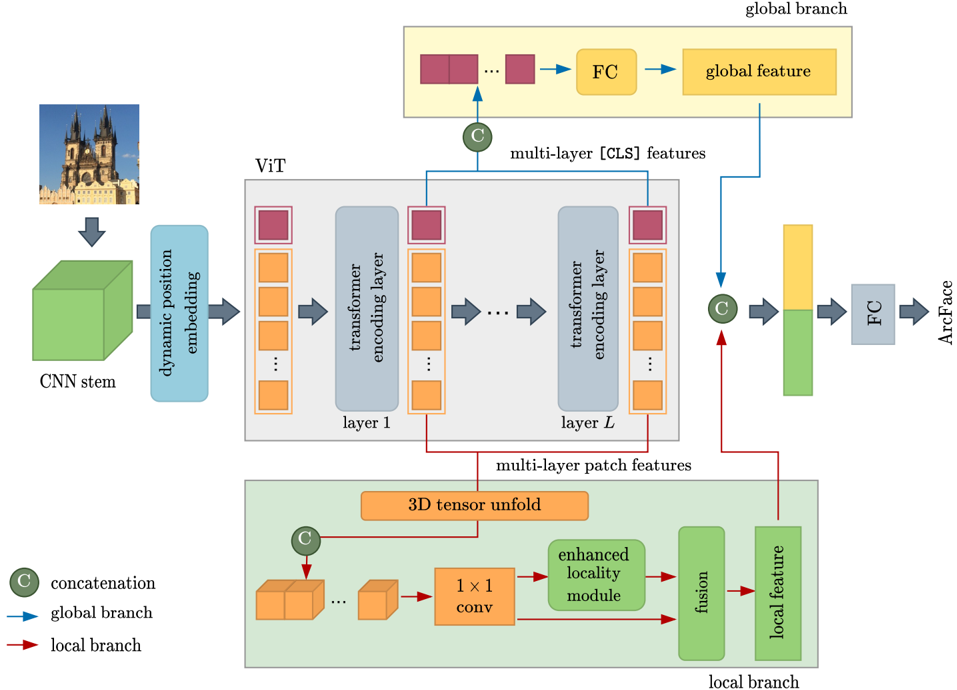

Source diagram
D
Click to enlargeThe raster the Transmuter receives. Everything on the canvas below is re-derived from it as vector code.
ready
Semantic class tags
0Pipeline map
1 · Diagram Transmuter
2 · Animation Planner
3 · Diagram Animator
Stage 1
Diagram Transmuter
Rendered SVG
0 / 0 elementsblank canvas
1timestamp
1
This browser cannot decode the narration-synced video.
The file sits next to this page — open it directly to view.
The file sits next to this page — open it directly to view.
Drag to pan · scroll to zoom · Space to play/pause
100%